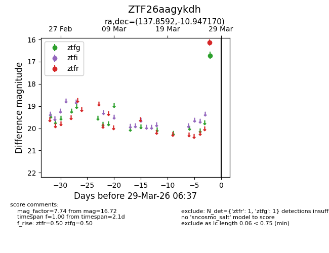
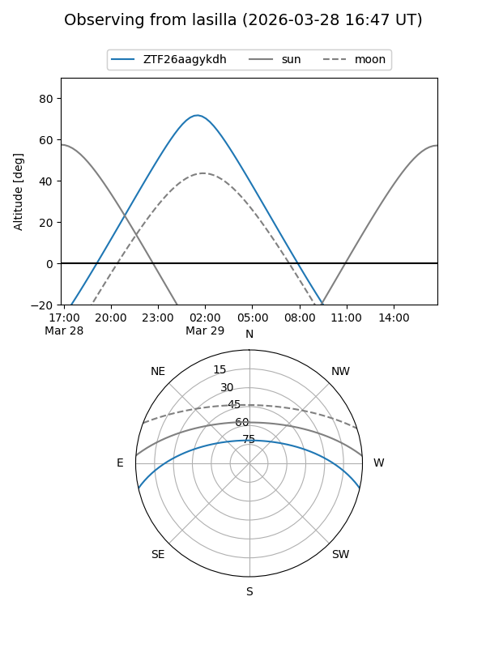
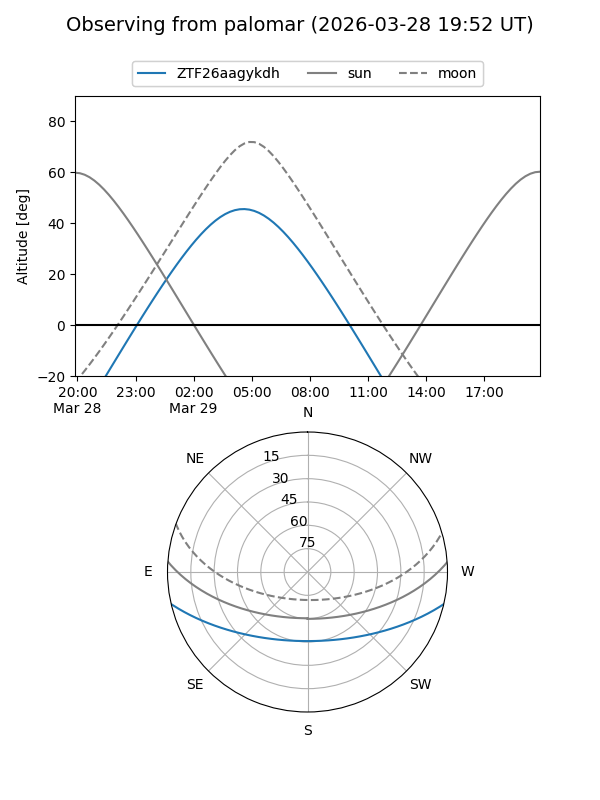

ZTF26aagykdh
Target ZTF26aagykdh at 2026-03-29 06:40
Aliases and brokers:
FINK: link
Lasair: link
ALeRCE: link
alt names
ZTF26aagykdh (ztf,fink_ztf)
Coordinates:
equatorial (ra, dec) = 137.8592,-10.94717
equatorial (HMS+DMS) = 09:11:26.21,-10:56:49.81
galactic (l, b) = (240.8300,+24.49352)
Flags:
Photometry:
last ztfg=16.72, ztfr=16.13
1 ztfg, 1 ztfr detections
Lightcurve

Visibility


Additional plots